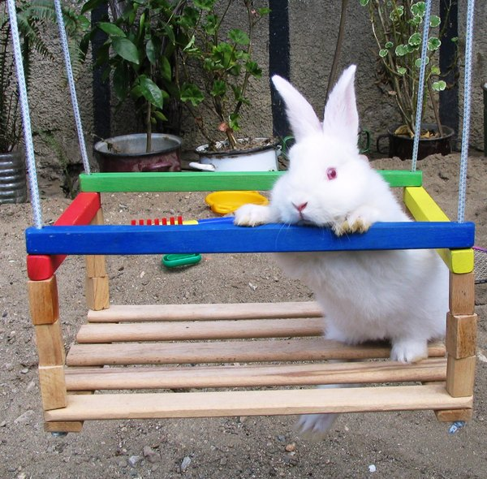
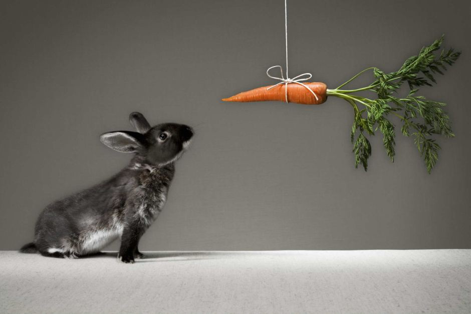
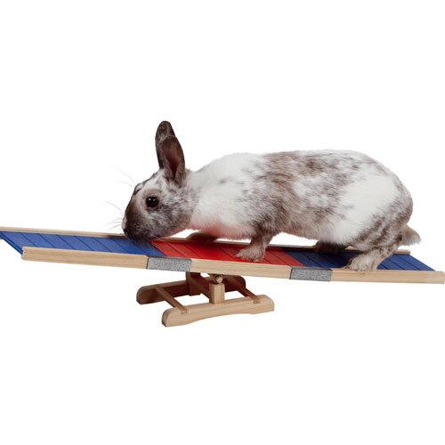
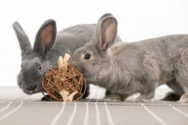
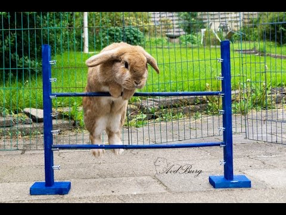
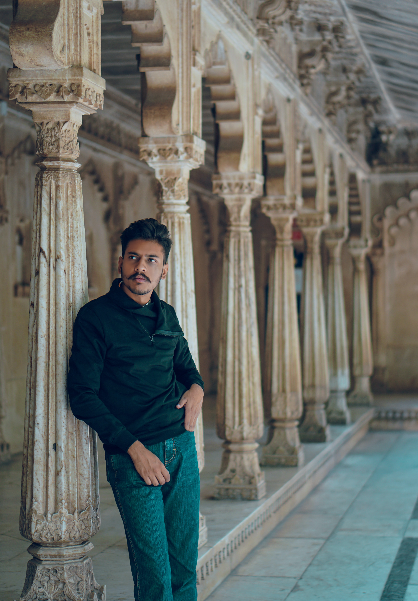
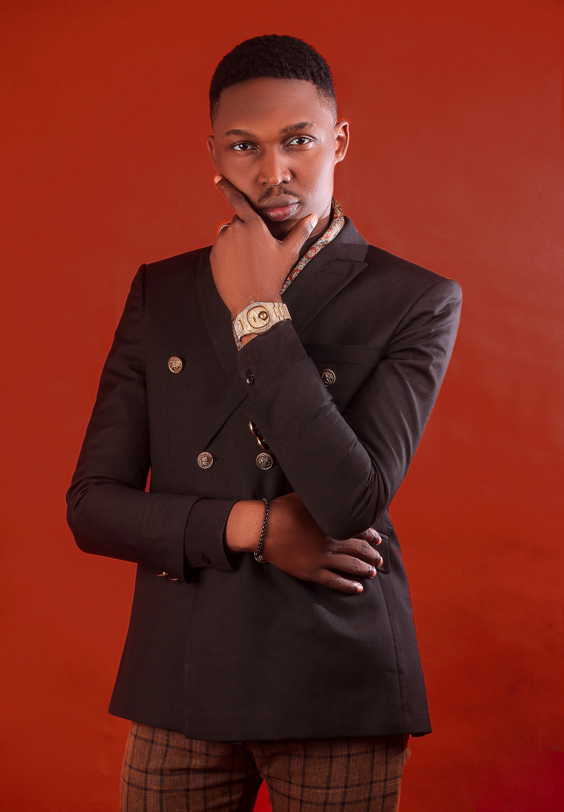

Our Mission
Running Rabbits is a wonderful organization that supports the development of rabbit exercise. Rabbits are quite smart animals and they need a lot of attention and challenge. Running Rabbits develops exercise materials for rabbits so they can grow in their intelligence and abilities. Have a look around!
Gadgets
The following gadgets were made by our team to provide rabbits with some great exercise.
-

The Swing
-

Carrot Catching
-

Balance Act
-

Search and Rescue
-

Hopping Happiness
About Us
Our motivated team loves to find the right equipment for your specific rabbit. They are familiar with every species, their abilities and level of intelligence.
-

Omar Fluffyhead
A real caretaker, founded deep within his roots. Omar knows everything there is to know about the wellbeing of rabbits. Back in 2012, he founded Running Rabbits during his studies in business management.
-

Col Bunnyhops
Col is a good friend of Omar and helped him out during the early stages of Running Rabbits. Col knows all there is to know about finance, business structures, and bunny hopping.
-

Christina Longear
As her name implies, Christina is a very good listener. As our HR manager, she sees to it that our team doesn't get any smaller than it already is.
If you have any questions, don't hesitate to contact us through all the possible channels.